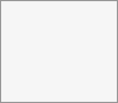

You can share files in a chat in three ways.
First, we can simply drag'n'drop them on the chat.
Second, you can select a file from your
You can add more files until you are done and decide to share the files. You can also add a text caption to your shared files, providing a brief description or context.
All users will be able to click the files to view, edit or download them, regardless of whether they have a
You can create a poll in groups chats from the new message additional actions. For the full details, click here.
A poll has two settings:
Anonymous polls: Participants cannot see who voted for which option.
Allow multiple choices: Participants can select more than one option.
You can also import polls for auto-fill and export polls as JSON files to save them locally.
You can close a poll from the poll dialog.
As a moderator, you can create the poll directly or you can save it as a draft in order to edit it later.

You can find poll drafts in Shared items tab or next to the poll title input field.